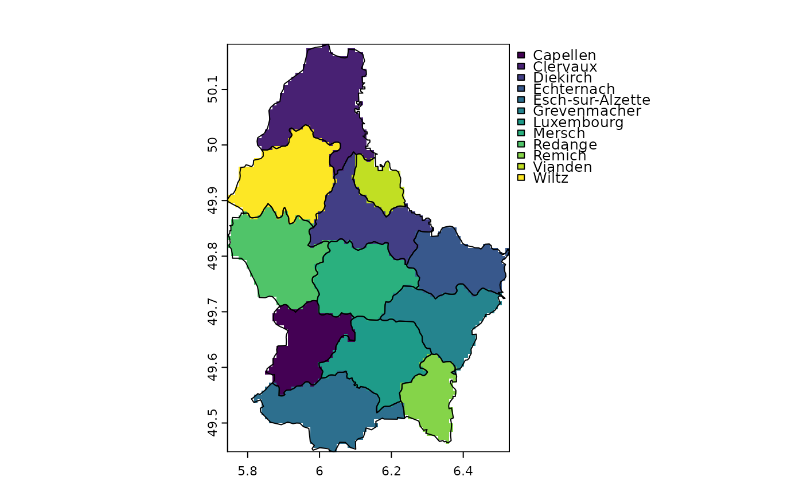

rasterize.RdTransfer values associated with the geometries of vector data to a raster
# S4 method for SpatVector,SpatRaster
rasterize(x, y, field="", fun, ..., background=NA, touches=FALSE, update=FALSE,
cover=FALSE, by=NULL, filename="", overwrite=FALSE, wopt=list())
# S4 method for matrix,SpatRaster
rasterize(x, y, values=1, fun, ..., background=NA, update=FALSE,
by=NULL, filename="", overwrite=FALSE, wopt=list())SpatVector or a two-column matrix (point coordinates)
SpatRaster
character or numeric. If field is a character, it should a variable name in x. If field is numeric it typically is a single number or a vector of length nrow(x). The values are recycled to nrow(x)
typically a numeric vector of length 1 or nrow(x). If the length is below nrow(x) the values will be recycled to nrow(x). Only used when x is a matrix. Can also be a matrix or data.frame
summarizing function for when there are multiple geometries in one cell. For lines and polygons you can only use "min", "max" and "sum"
For points you can use any function that returns a single number; for example mean, length (to get a count), min or max
additional arguments passed to fun
numeric. Value to put in the cells that are not covered by any of the features of x. Default is NA
logical. If TRUE, all cells touched by lines or polygons are affected, not just those on the line render path, or whose center point is within the polygon. If touches=TRUE, add cannot be TRUE
logical. If TRUE, the values of the input SpatRaster are updated
logical. If TRUE and the geometry of x is polygons, the fraction of a cell that is covered by the polygons is returned. This is estimated by determining presence/absence of the polygon in at least 100 sub-cells (more of there are very few cells)
character or numeric value(s) to split x into multiple groups. There will be a separate layer for each group returned. If x is a SpatVector, by can be a column number or name. If x is a matrix, by should be a vector that identifies group membership for each row in x
character. Output filename
logical. If TRUE, filename is overwritten
list with additional arguments for writing files as in writeRaster
SpatRaster
r <- rast(xmin=0, ncols=18, nrows=18)
# generate points
set.seed(1)
p <- spatSample(r, 1000, xy=TRUE, replace=TRUE)
# rasterize points as a matrix
x <- rasterize(p, r, fun=sum)
y <- rasterize(p, r, value=1:nrow(p), fun=max)
# rasterize points as a SpatVector
pv <- vect(p)
xv <- rasterize(pv, r, fun=sum)
# Polygons
f <- system.file("ex/lux.shp", package="terra")
v <- vect(f)
r <- rast(v, ncols=75, nrows=100)
z <- rasterize(v, r, "NAME_2")
plot(z)
lines(v)
